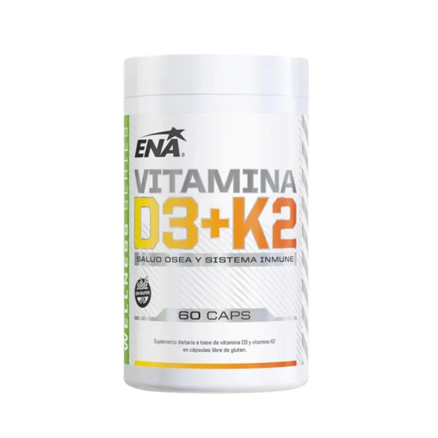

Creatina
Cualquier momentoEl horario es lo de menos. Lo que importa es tomarla todos los días, también los de descanso.
El horario es lo de menos. Lo que importa es tomarla todos los días, también los de descanso.

Después de entrenar o en el desayuno. Lo que cuenta es el total de proteína del día.

Con comida se absorbe mejor y cae mejor. Una vez abierto, guardalo en la heladera.

Son vitaminas liposolubles: necesitan grasa para absorberse bien.